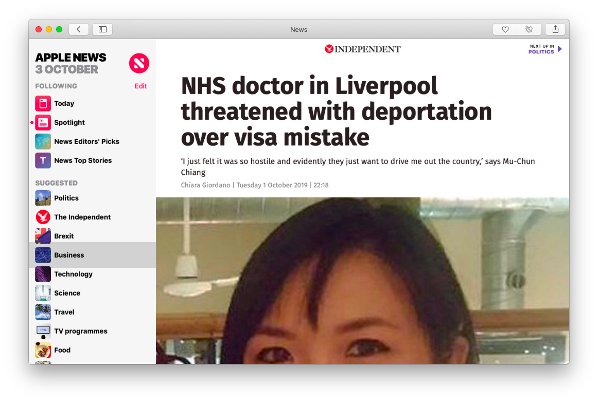
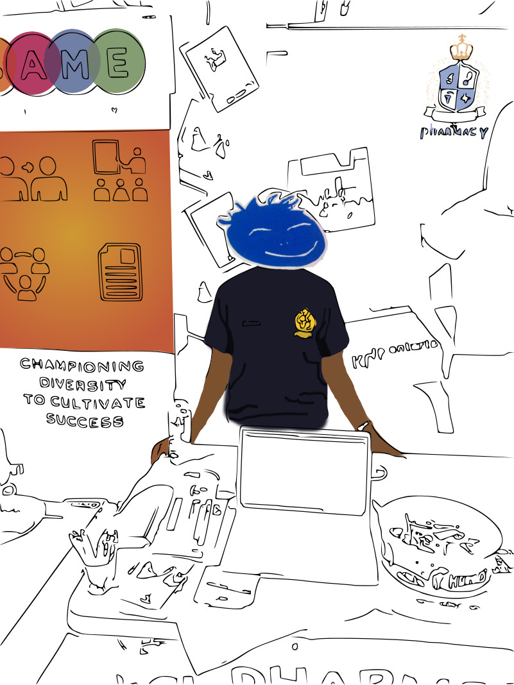
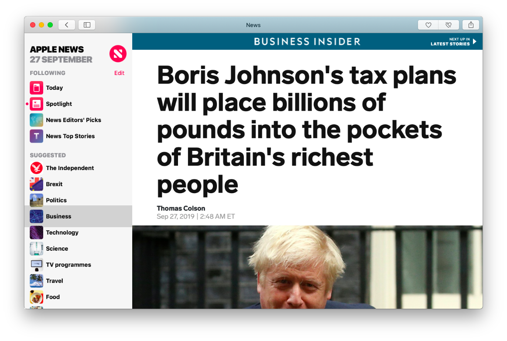
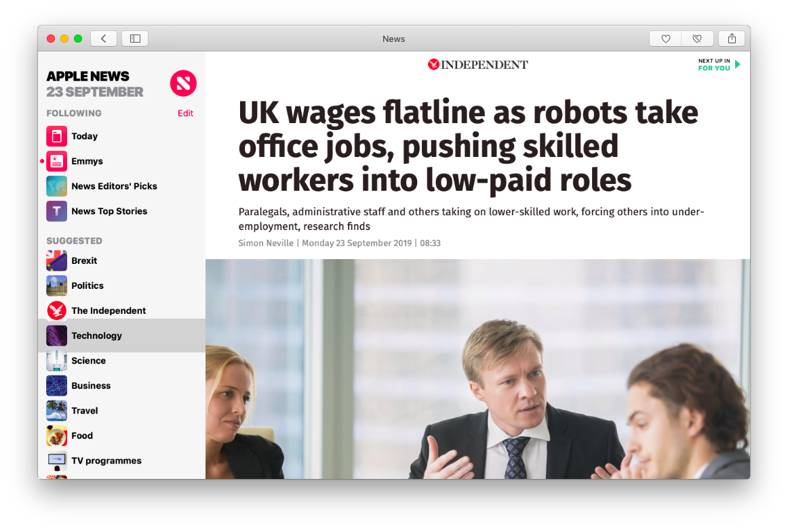

## Capitalism As Mode Of Power
Korski is the worst hypocrite ever, telling everyone about extraordinary opportunities to improve people's lives via his corrupt gov tech scheme, when there are doctors being kicked out of the country with hostility, while there is a shortage of doctors in the country. The system they've been building is absolutely disgusting, but life's sweet in their little techno bubble. If Korski wants to improve people's lives so much let him go be a GP. This is the [real truth](gps) behind Health IT innovations: "Does not replace the interaction in the room with a patient and is just a way of cramming more work our way." It does not replace the bloody interaction alright, no matter how much money you launder via the _GovTech_, it's always going to be the GPs just doing the work.

It just moves me to tears how the propaganda is so active at spreading the news that nowadays everyone can be an entrepreneur, how much amazing help there is from the government, how technology businesses are the ones to make us all productive, and when I submit my application to Tech Nation, they completely humiliate me telling absolute lies. I'm a Software *Engineer* OK Engineers, like doctors whom everyone needs, are the most valuable assets in the society because we build shit everyone else is using. Then these capitalist arseholes come in and tell us all that they have experts and they are building the industrial economy. Fuck off already alright? It's Ayn Rand's Atlas Shrugged (just read it) in 2019 but when looters are not communists but capitalists.

My girlfriend studied in the UK for 4 years to be a pharmacist. She then had a year-long placement at St Thomas' just opposite Westminster which is the best placement you can get in England. When she graduated, she went to a number of interviews. She was offered a place at a hospital, but then they withdrew (such a dick move) because they said they didn't know she needed a visa (when it was advertised otherwise). She then got another job offer from another hospital in London, and starting at level 7.5 and not 7 on their career ladder which is really great considering she's just graduated. And you know what, she couldn't get that job either because it also required the visa NHS couldn't provide.
The moral of this story is, we both study in the UK and make friends. She was working part-time for pharmacies and volunteering as a carer pretty much for free, and I was busy getting a bachelors in Computer Science and AI from Sussex, where Margaret Boden (one of the best researchers in AI) is based, then a distinction in Master's in Computer Security from King's College London, then working and starting my own business that is now making the most significant Open Source contributions. And WE're not allowed to continue living in the UK, whereas SOMEONE who's applied to the EF program, and dropped out after 14 weeks, can stay in the UK with the most permissive visa allowing him to work anywhere and apply for citizenship in 3 years. Is that a fair system? But ofc, no visa problems for God chosen "special talent" people who have 0 commits on _GitHub_.
In any way, pharmacists are not even needed today because the prescriptions are delivered by _Echo_, and Robin Klein is happy with his undisclosed amount (£20 million?) for the exit. And what of the makers of _Echo_? They just move on to the next job, whereas my company is everything for me and I would never ever sell. Why is this world so degenerate that it is only money that matter? Because they killed God and people don't have proper values any more, it's all money investors exits. One does not have to be religious to understand God, you just need to be a good man, it's really easy, yet the trick is that because religions are full of outdated crap trying to control the population themselves, people feel disaffiliated with them, thinking that there's no God. That's why _Art Deco_ is the alternative — we can have culture and values, morals and virtues, without being told what to obey. We need to scale down from this technological madness and focus on real human interactions since they are rewarded by evolution with the healthy flow of neurotransmitters, and use technology for support and not as the aim in itself, especially for enrichment.
YOU DON'T WANT TO SELL YOUR COMPANY REMEMBER THAT ONCE AND FOR ALL. You want to work for the better of your community, make profit and grow. This and human interaction is the goal. Forget investors, they are just owning you for their own agenda. Yet it's on everyone's mind "how much percent should I give up and for how much cash"... Just calm down it's wrong. See because I think this way I can't get the visa as I can't serve their interest and they can't capitalise on me.


The UK's economy contracted by -0.2 in the previous quarter, and although it recovered to 0.3%, [year-on-year, the economy grew](te) 1 percent the weakest pace of expansion since the first quarter of 2010. If the accelerators like _EF_, and _Tech Nation_ are working so hard, why is there no benefit to the economy? The reason is because capitalists are not interested in economic growth, since the worse off everyone else is, the better off they are on differential scale. Capitalism is a mode of power — those who get their riches strive to protect them at all price and because they don't have soul that would allow them to understand that the meaning of life consists of building communities, they set up agencies and manipulate the political landscape to their advantage.
Watch [the video](https://www.youtube.com/watch?v=gTpanudMToA) that explains what differential mode of power means. "Far from being a distortion of contemporary capitalism, slowing growth may be part of its very logic".
In case of technology, agencies like _Tech Nation_ are precisely there to pervert all meaning of talent in IT via providing places only for candidates selected by the elite for their technology warehouses.
_EF_ wraps their proposition like they are helping young entrepreneurs, but in fact its their privileged money-holders who win the most. For example, if out of 100 places in EF, 20 new companies are set up, and there's a 2000 shares pot, each person gets 90% of their own company or 90 shares, but overall EF's investors receive 10% x 20 = 200 shares which makes them almost twice as powerful than each individual new company owner. _Tech Nation_'s job is also to make sure that no *Open Source* developers are let through, so that the capitalists don't have to compete with them. This is not what the UK's population is paying them money for.
It's Open Source, inclusive anarchy _VS_ defensive, corporate capitalism and we need to clearly define the terms and conditions of this battle by updating our licenses. For example, under my [*Art Deco* License](ad) (AD-1), no company can use my software in the UK for commercial reason without acknowledging that they are not represented by liars from _Tech Nation_. _Tech Nation_ shamelessly exploits the community without representing a single person from it, only to justify their completely unethical application process, in which not a single expert is even involved. They look — is this person known in the community? Is he capable of getting out there and brainwashing everyone that UK tech is good, while in the background our _Conservative_ lords and their pals loot the country's treasury? If it's not a well known person, he won't get a place (despite that popularity/recognition is not a mandatory criteria, but because the fate of applicants is decided by managers who pretend to be experts, this is the only thing they recognise).
All of this is proved by the fact that you used to have to submit 2 recommendation letters, now there are 3 (where is even a really talented young person supposed to get 3 recommendation letters from world leaders in IT? but when you receive the "expert assistance" from Tech Nation itself, it surely won't be a problem). There used to be fast-track route for Senior specialists, now only for accelerators. These truths point exactly to the fact that the degenerate Tech Nation visa is a proper scam not suitable for real professionals in the field but only for rats that can spread their propaganda like plague.